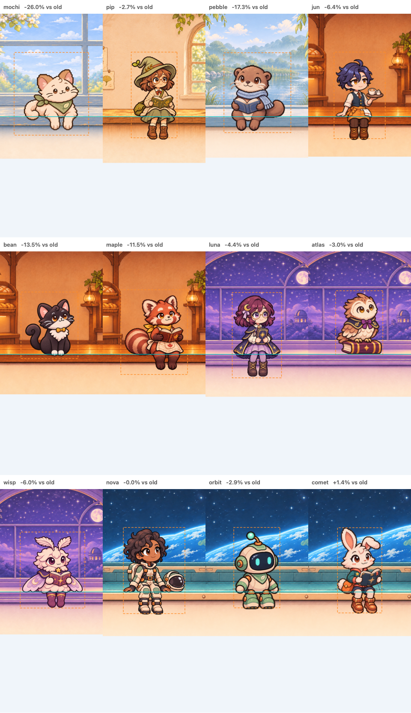

Shelf composition review
96 confirmed Duo/iPad references · 3.03% average size difference · 9.48% maximum.
The 48 phone/Max cases have no confirmed numeric export. Their dashed boxes show the old baseline, not an approved target; they are excluded from the tolerance claim. The earlier report incorrectly counted them as confirmed.
Teal lines mark the sitting surface. Orange boxes show comparison bounds. These are offline compositions without the app UI, using representative header allowances.

Actual Pro Max portrait · Actual Pro Max landscape
Method and limitations · Measured results